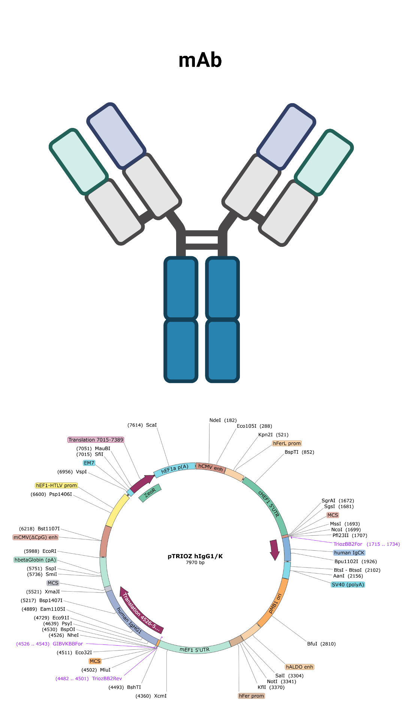
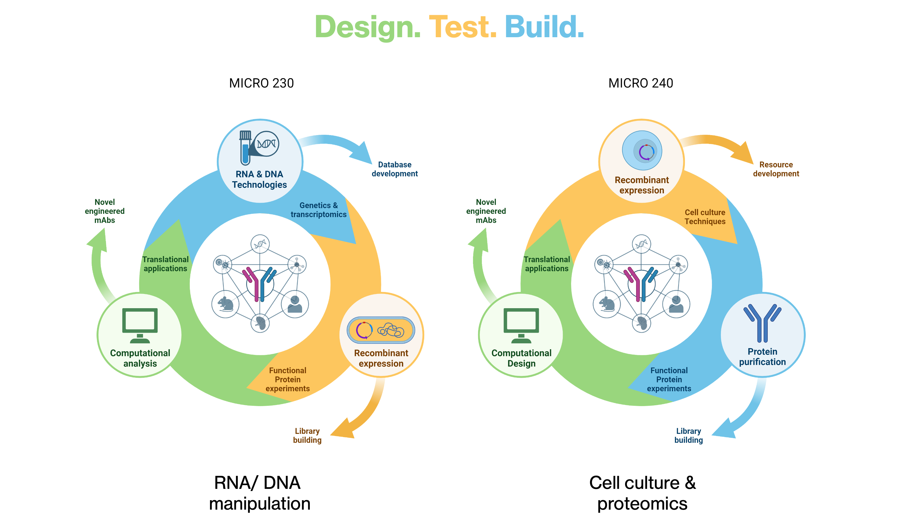
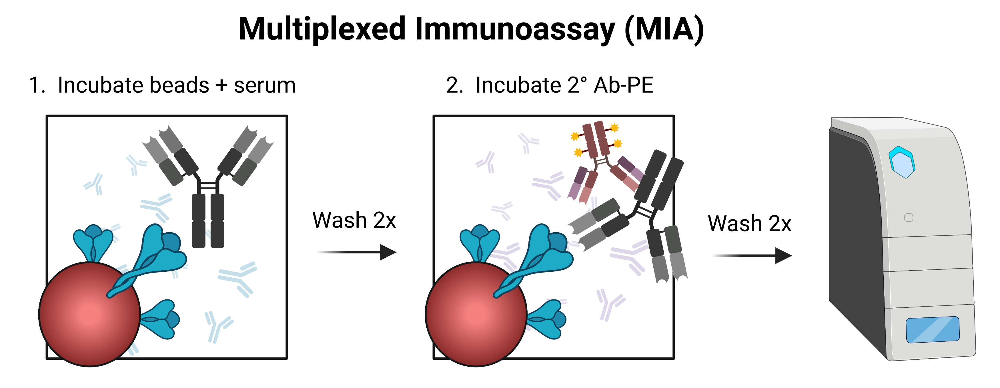
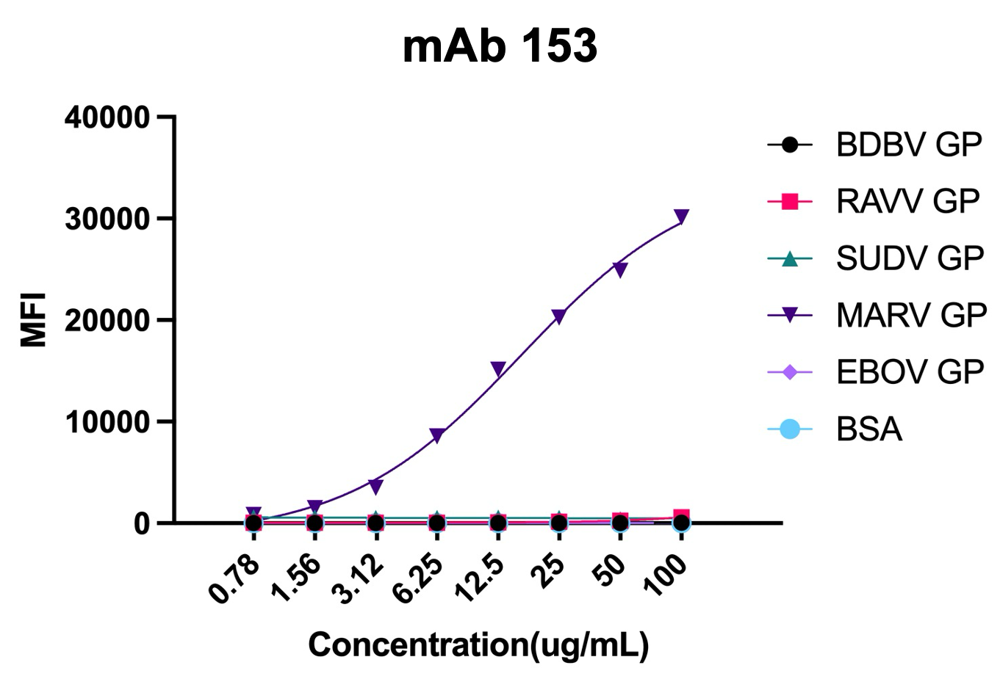
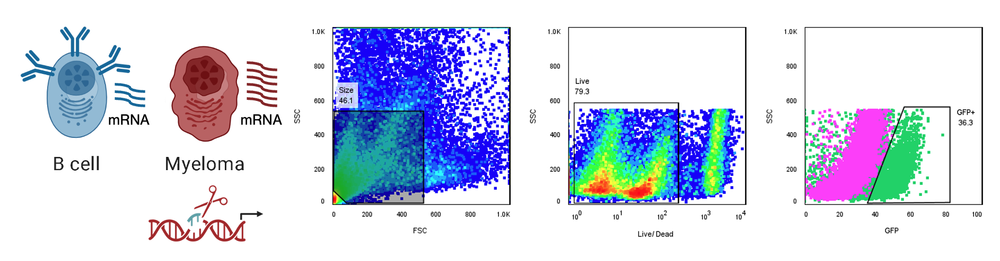
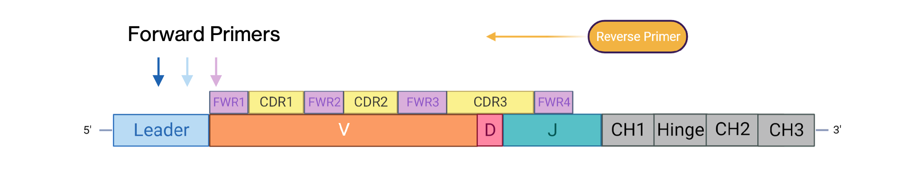
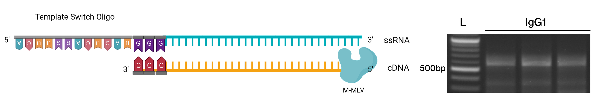
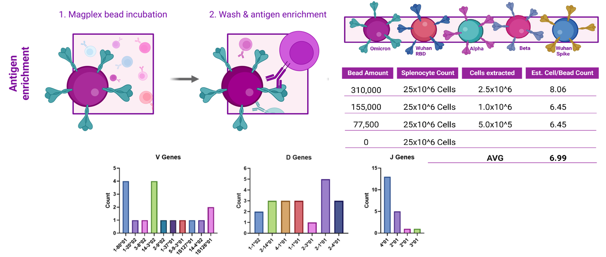
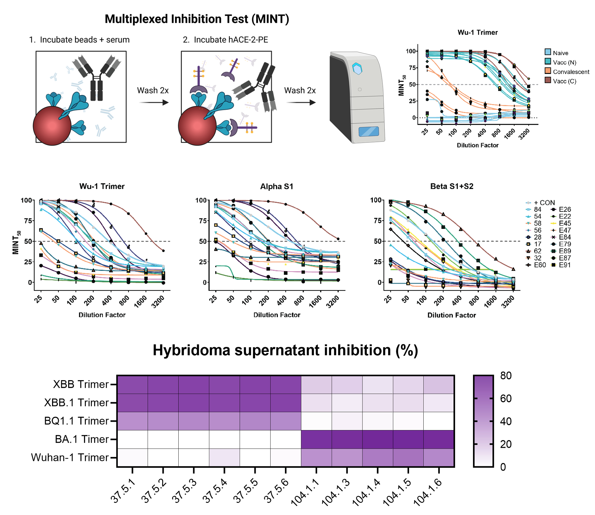
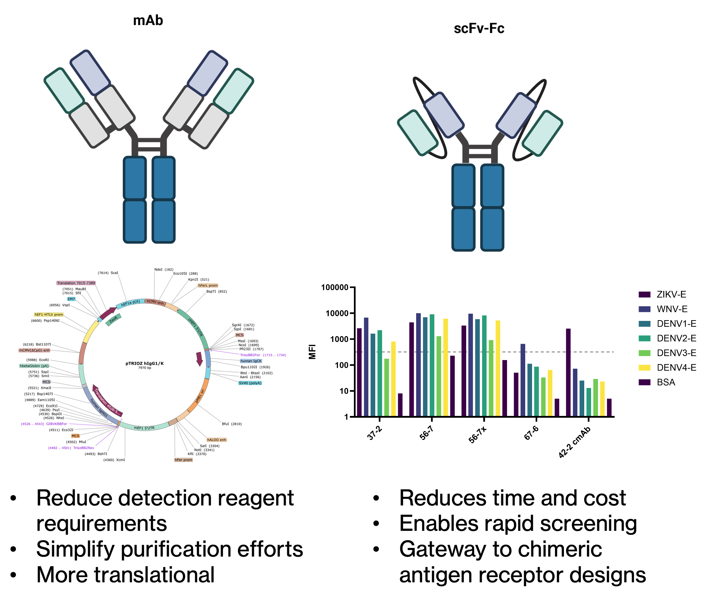

Antibody Engineering & Student Research Projects

The Program
Kapiʻolani Community College (KCC) is part of the ten-campus University of Hawai’i system, which includes three major research university campuses and six community colleges. KCC is a member of InnovATEBIO, a national network for biotechnology workforce education.
More information on KCC and the programs related to this Antibody Engineering Project can be found in the links below.
Explore KCC
Additional Project Information
Collaborators
About the Project
Antibodies are proteins naturally produced by the vertebrate immune system. They are important in biotechnology, serving as reagents in research, diagnostics, and therapeutics. Using antibody engineering as a focus for training, students at Kapi'olani Community College (KCC) will learn practical skills for the biotechnology workforce. Indeed, the biotechnology industry is experiencing a period of growth that requires talented personnel trained across many disciplines, including data science, artificial intelligence, and machine learning. Moreover, the pandemic severely impacted the economy in Hawai'i due to its heavy reliance on tourism. Thus, to diversify the economy and create high-paying jobs in high-tech, knowledge-based, and emerging industries such as biotechnology, the state of Hawai'i is interested in diversifying innovative industries to ensure the state can function in a technologically advanced world. As a minority serving institution, with a native Hawaiian student population of ~20%, KCC contributes to the enhancement of diversity, equity, and inclusion in STEM. The unique opportunity to introduce antibody engineering into KCC's regular biotechnology curriculum will contribute to the building of a capable workforce for the growing biotechnology and biomanufacturing sectors in Hawai'i. This project will also contribute to the diversification of the economy in Hawai'i and have a positive impact on native Hawaiian students and the biotech industry in the state of Hawai'i and across the nation.

Monoclonal Antibody
Curriculum Development
This project will introduce new antibody engineering modules to the biotechnology program at Kapi'olani Community College. The first goal is to train students to enter the biotechnology workforce. The second goal is to demonstrate the importance of data science in biotechnology and biomanufacturing and to enhance the undergraduate experience. The third goal is to train students in the design, production, purification, and characterization of antibodies using the Design-Build-Test paradigm. Accomplishing these goals will extend the capabilities of the Monoclonal Antibody Service Facility and Training Center (MASFTC). The specific aims for this project are: (1) Develop classroom and laboratory modules to support experiential-based undergraduate learning and research activities using the Design-Build-Test paradigm as applied to antibody engineering. (2) Develop data science and bioinformatics education modules with a web-based graphical user-interface to guide classroom activities and laboratory components with an emphasis on undergraduate research experiences. (3) Establish the KCC-Antibody Center of Excellence (KCC-ACE) database to record the Design-Build-Test activities carried out by KCC students and faculty.

Activities in MICR230 and 240
Research Overview
Students are conducting research on a number of anti-viral monoclonal antibodies. These include hybridomas against Marburg Virus and SARS-CoV-2. We are able to attach relevant target antigens to beads and incubate with antibodies to characterize using Luminex technologies. These multiplexed Immunoassays (MIA) are used to characterize the antibodies produced by students in the lab, and have included work on epitope mapping. We use a scRNA-Seq Library to study Zika Virus targets as well, guiding development of novel antibodies.
Virus Targets.


CRISPR/Cas9
Students are learning CRISPR/Cas9, a revolutionary genome editing system, to edit antibody genes in B cells, followed by analysis using Flow Cytometry and quantitative PCR. This allows students to design changes to gene sequences then assess the results of this gene editing. It is a versatile tool for editing the genome and is a relevant skill for students to learn with potential applications in medicine and biotechnology in general.

VDJ Sequencing
Students use VDJ sequencing, which are complicated sets of genes that recombine to form the antibody binding domain, to study the recombination process that generates this diverse set of antibodies. Since this is a complex process that involves the genetic recombination of Variable (V), Diversity (D) and Joining (J) gene segments, it requires complicated deep sequencing approaches. Students are learning different primer and PCR techniques to learn efficient ways to do VDJ sequencing. This is being combined with MagPlex B cell enrichment which enables deeper analysis of antibody responses.


VDJ Sequencing Approaches

B Cell Enrichment
Development of Novel Assays
Students work on developing novel multiplexed assays for antibodies to detect those that inhibit binding of viruses to their target receptor, in this case SARS-CoV-2 binding to ACE2. This technique can be used to screen our supernatants for antibodies of interest for future development as we isolate clones which neutralizing activity may exist. We also have access to Surface Plasmon Resonance (SPR) where students are learning to determine binding properties of antibodies such as on- and off-rates, as well as the equilibrium dissociation constant (Kd). We have been able to find antibodies with very high affinities that would not have been identified using other methods in the laboratory.

Development of MINT Assays
Antibody Engineering
The students learn antibody engineering as a core part of the curriculum. This can reduce the time and cost it takes to screen a large expression library. Monoclonal antibodies are a Y-shaped molecule made up of four polypeptide chains -- two identical light chains (LC) and heavy chains (HC) linked together by disulfide bonds. We have cloned the variable domains of the LC and HC as a single polypeptide and linked it to the variable domain of the IgG1 Fc domain. This had reduced the cost and time in half to screen our antibody libraries.
